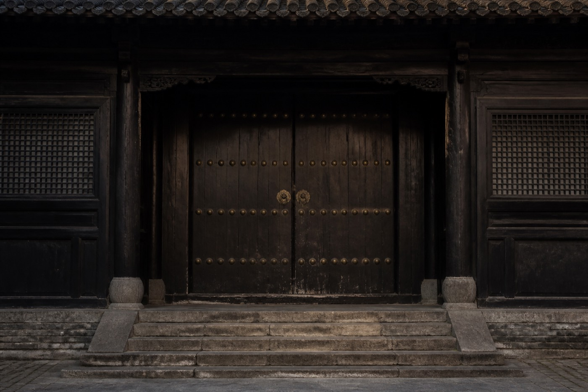

渠西县桐石镇桐石巷老宅修缮对外页。免费模板改过两次配色，灰 Tab 没换。指挥部不做法事，不审风水，只谈灰、木、工期。
- 地址：桐石巷贺宅一带（虚构区划）
- 值班：白班阙禾 夜岗柴渡（不对外接访）
- 电话：0×××-□□□□□□（打码）

渠西县桐石镇桐石巷老宅修缮对外页。免费模板改过两次配色，灰 Tab 没换。指挥部不做法事，不审风水，只谈灰、木、工期。

对外页白天给人看工期。夜里没人维护。灰着的参观预约从来没开过。开过的只有窗口口径。口径和夜岗板并排挂着，像两张嘴。哪张嘴能定今夜，不在这页写完。